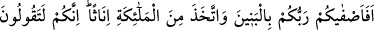
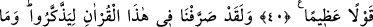
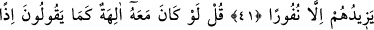
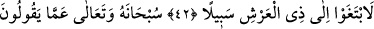
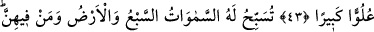
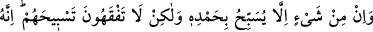
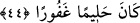
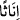

O’NU TESBİH ETMEYEN
HİÇ BİR ŞEY YOKTUR
40. (Ey müşrikler!) Rabbiniz, erkek çocukları sizin için ayırdı da, kendisi
meleklerden kız çocuklar mı edindi! Gerçekten siz, (vebali) çok büyük bir söz
söylüyorsunuz.
41. Biz, onların akıllarını başlarına toplamaları için bu Kur’an’da (çeşitli ikaz ve
ihtarları) türlü şekillerde tekrar ettik. Fakat bu, onlara, daha da kaçıp
uzaklaşmaktan başka bir şey sağlamıyor.
42. De ki: Eğer söyledikleri gibi Allah ile birlikte başka ilâhlar da bulunsaydı, o
takdirde bu ilâhlar, Arş’ın sâhibi olan Allah’a ulaşmak için çareler arayacaklardı.
43. Allah, onların söyledikleri şeylerden münezzehtir; son derece yücedir ve
uludur.
44. Yedi gök, yer ve bunlarda bulunanlar O’nu tesbih eder. O’nu övgü ile tesbih
etmeyen hiçbir şey yoktur. Ne var ki siz, onların tesbihini anlamazsınız. O, halîmdir,
bağışlayıcıdır.
“(Ey müşrikler!) Rabbiniz, erkek çocukları sizin için ayırdı da, kendisi meleklerden
kız çocuklar mı edindi!” Bu âyet meleklerin Allah’ın kızları olduğunu söyleyenlere
hitaptır. Müşrikler kız çocuklarından hoşlanmıyorlar, kendileri için erkek çocuklarını
tercih ediyorlardı. Bununla birlikte Allah Teâlâ’ya kızları isnad ediyorlardı. Bu sebeple
Allah onların bu tutumunu kınadı.
Âyetin başlangıcındaki hemze inkâr içindir. Yâni, Allah soru üslûbu ile onların
dediklerinin asılsızlığını ortaya koymaktadır. Kız çocuklarının “ inâs (dişi)” kelimesi
ile ifâde edilmesi onların müşriklere göre değersizliğini ortaya koymak içindir. Çünkü
dişilik onlara göre bir canlının en değersiz vasıflarındandır. Yâni Allah özel bir durum